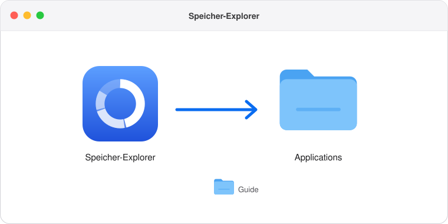
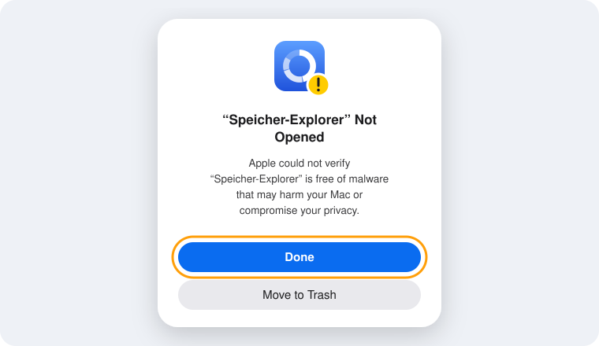
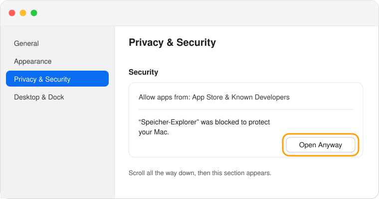
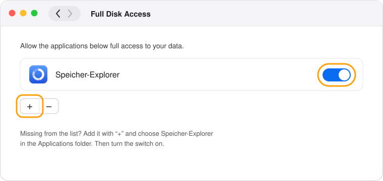
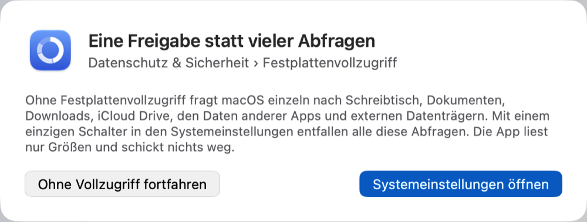

Install Speicher-Explorer
Five short steps, all with the mouse. The app is free and sends nothing to the internet.
- Drag Speicher-Explorer into the “Applications” folder. Then you can close this window.

- Open the app from the “Applications” folder. The first time, macOS reports that it could not verify the app. Click “Done”.

- Allow the first start. Open System Settings › Privacy & Security, scroll all the way down and click “Open Anyway”. Then the app starts; this is needed only once.

- Grant Full Disk Access. The app offers “Open System Settings” for it. Turn Speicher-Explorer on there; if it is missing from the list, add it with “+”.

- Click “Restart App” in the app. From now on it measures everything without further questions.

Rather use the Terminal?
In the Terminal you copy the app and allow the first start in one go. Not even the Terminal can grant Full Disk Access; the last command opens the matching System Settings pane for it.
cp -R "/Volumes/Speicher-Explorer/Speicher-Explorer.app" /Applications/ xattr -dr com.apple.quarantine /Applications/Speicher-Explorer.app open /Applications/Speicher-Explorer.app open "x-apple.systempreferences:com.apple.preference.security?Privacy_AllFiles"